IT Network Support AI Agent & Ticketing Harness
An autonomous L1/L2 Network Operations platform for Kazyon Plus Egypt’s 1,150+ stores. It detects offline branches, runs automated router and 4G checks, and dispatches bilingual ISP tickets with human safety guardrails.
Autonomous 3-Step Loop
- 1. Ingest: Parses hourly SQL Replication reports to flag Critical (>24h) and High (3–24h) lagging branches.
- 2. Diagnose: Probes FortiGate SD-WAN, Cisco routers, and 4G modems in parallel to isolate the root cause.
- 3. Escalate & Close: Sends bilingual Arabic/English ISP emails, tracks Reference IDs, and verifies recovery before closing.
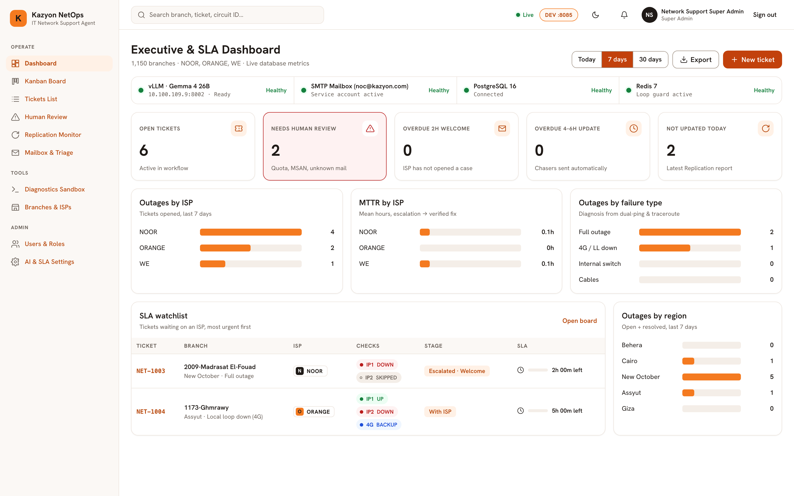
Operator Login & Security Context
Role-based authentication portal with live fleet telemetry and instant role presets.
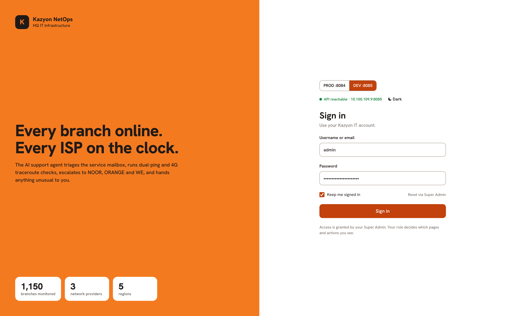
How It Works
Verifies NOC credentials via POST /api/v1/auth/login and issues a signed JWT token tied to the operator’s role (admin, dispatcher, or viewer) to unlock authorized console views.
What It Can Do
- Role-Gated Sessions: Protects every API action and screen based on user permissions.
- 1-Click Demo Presets: Switches between Admin, L2 Dispatcher, and Viewer roles for quick testing.
- Live Fleet Summary: Shows store coverage (
1,150+) and mean diagnostic speed (42s) at a glance.
Executive & SLA Dashboard
Real-time macro health across 1,150+ branches, ISP outage splits, and SLA countdowns.
How It Works
Polls GET /api/v1/tickets/dashboard/summary every 30 seconds to aggregate active tickets by priority, root cause, and ISP carrier (WE, Orange, Vodafone, Etisalat).
What It Can Do
- Executive KPI Cards: Tracks Active Tickets, Critical/High counts, Human Review queue, and SLA compliance.
- ISP Outage Breakdown: Highlights which telecom carrier is causing the most store disruptions.
- SLA Breach Watchlist: Ranks urgent open tickets with live countdown timers and 1-click drill-down.
Incident Kanban Board
6-stage autonomous lifecycle board with carrier filters and live SLA timers.
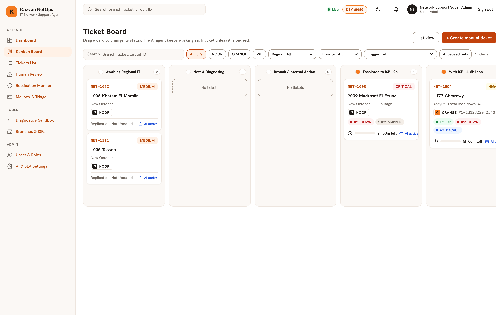
How It Works
Organizes every active incident from GET /api/v1/tickets/kanban across the 6 state-machine stages: NEW → DIAGNOSING → WAITING_ISP → ESCALATED_HUMAN → MONITORING → RESOLVED.
What It Can Do
- Live Workflow Swimlanes: Tracks tickets as the AI agent diagnoses and escalates them automatically.
- Instant Carrier & Priority Filters: Isolates Critical outages or specific ISPs in one click.
- Manual Ticket Creation: Lets operators open an incident for any branch and launch instant diagnostics.
Tickets List & CSV Export
Searchable tabular incident register with multi-filter controls and CSV export.
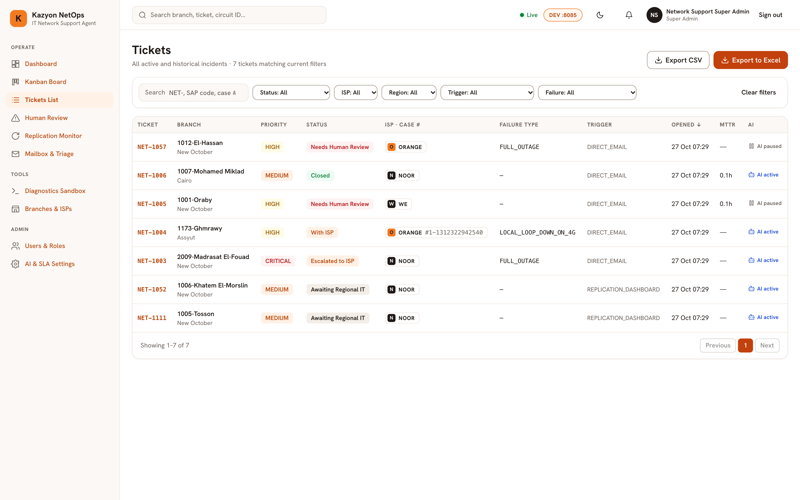
How It Works
Queries GET /api/v1/tickets and filters incidents by store code, governorate, ISP carrier, workflow state, priority, or root-cause classification.
What It Can Do
- Fast Multi-Filter Search: Combines text search with Status and Priority dropdowns.
- Side-by-Side SLA Inspection: Compares replication lag hours, root causes, and SLA timers in a clean table.
- 1-Click CSV Export: Downloads the filtered incident view for management reports and ISP SLA audits.
Ticket 360° Investigation Detail
All-in-one L1/L2 view uniting store topology, probe telemetry, ISP emails, and audit logs.
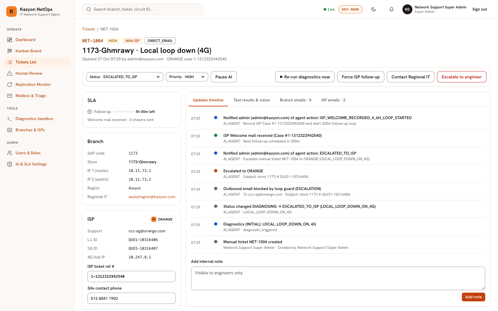
How It Works
Combines branch circuit data, FortiGate/Cisco/4G diagnostic output, bilingual ISP emails, and audit history from GET /api/v1/tickets/{id} into one screen.
What It Can Do
- Live Probe Telemetry: Triggers L1/L2 network checks and displays packet loss, latency, and 4G signal levels.
- Direct ISP & L2 Actions: Sends bilingual ISP escalations, routes to Human Review, or verifies recovery.
- Full Audit Timeline: Logs every automated check, email, and engineer note chronologically.
Replication Lag Monitor
Parses hourly SQL Replication HTML reports, grades store lag, and auto-spawns tickets.
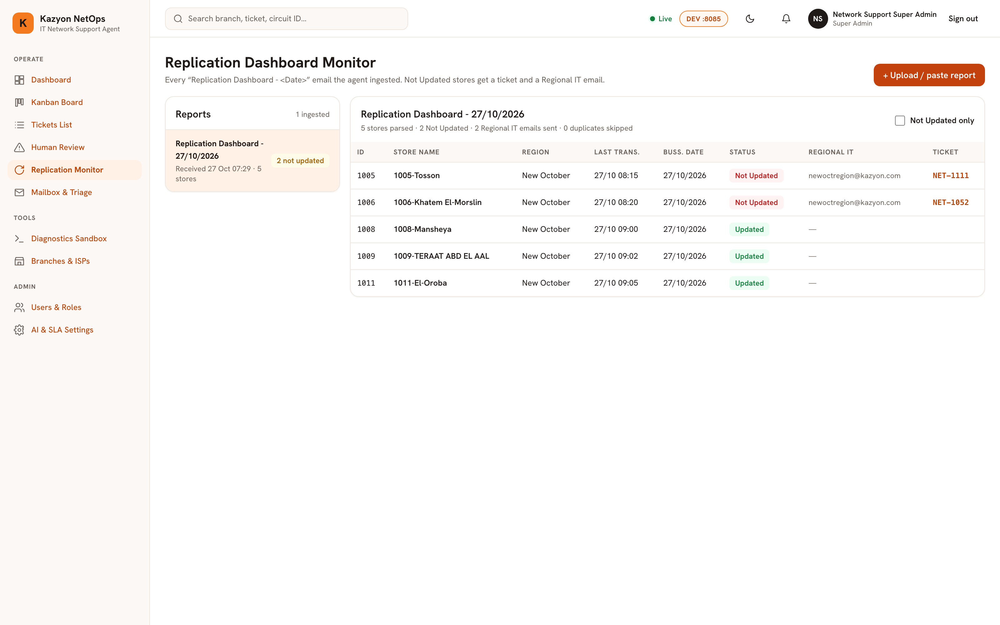
How It Works
Sends Replication Dashboard HTML tables to POST /api/v1/replication/parse, extracting store sync lag and automatically opening or updating tickets for Critical (>24h) and High (3–24h) branches.
What It Can Do
- Fleet Health Bar: Visualizes Synced (<1h), Low (1–3h), High (3–24h), and Critical (>24h) stores.
- Smart Deduplication: Updates existing open tickets instead of creating duplicates on hourly runs.
- Recovery Detection: Flags open tickets whose stores have returned to normal sync for auto-closure.
Human Review & Guardrail Queue
Dedicated L2 queue for total blackouts, internal LAN faults, and low-confidence cases.
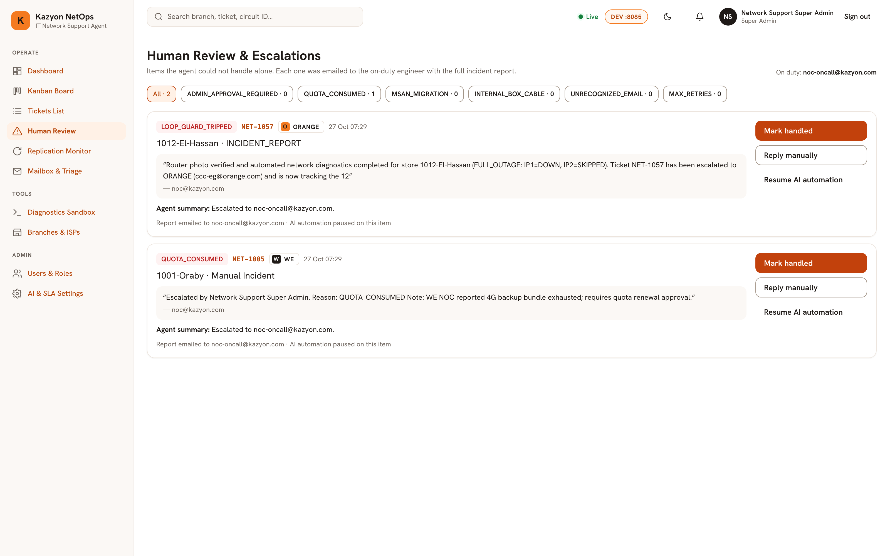
How It Works
Holds all ESCALATED_HUMAN tickets where safety rules stop automated ISP emails—such as total site power blackouts or internal store switch failures.
What It Can Do
- Clear Escalation Context: Explains why automation paused and shows the AI’s recommended action.
- 1-Click Engineer Decisions: Return to ISP queue, re-run diagnostics, or resolve after on-site repair.
- Audit Note Capture: Records operator sign-off notes directly into the ticket history.
Mailbox & Email Triage Console
3-folder email inspector and simulator for Replication alerts, ISP replies, and dispatches.
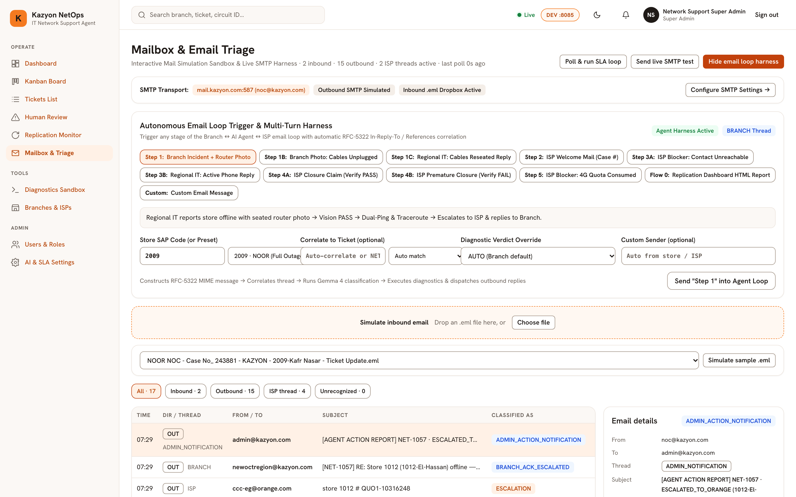
How It Works
Syncs with Exchange IMAP/SMTP to classify messages into Replication Reports, ISP Replies, and Outbound Dispatches while extracting carrier Reference IDs via regex.
What It Can Do
- 3-Folder Split Reader: Inspects HTML replication reports, carrier replies, and bilingual outbound tickets.
- On-Demand Mailbox Sync: Triggers an immediate IMAP poll cycle without waiting for the timer.
- Inbound Email Simulator: Injects test ISP replies to verify ticket matching and reference extraction.
Network Diagnostics Sandbox
On-demand L1/L2 test bench for FortiGate SD-WAN, Cisco routers, and 4G failover.
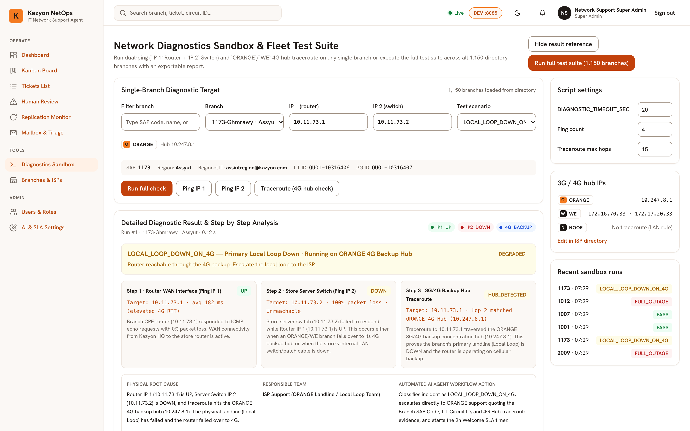
How It Works
Runs standalone probe pipelines via POST /api/v1/diagnostics/run against any store using live adapters or fault presets without altering active tickets.
What It Can Do
- 6 Fault Presets: Tests Local Loop Down on 4G, Packet Loss, ISP Backbone Outage, Weak 4G Signal, LAN Fault, or Blackout.
- 4-Probe Telemetry View: Displays FortiGate tunnel state, Cisco interface counters, 4G signal dBm, and ping RTT.
- Instant Verdict Badge: Outputs the root-cause classification, confidence score, and next step.
Branches & ISP Directory
Master inventory for 1,150+ stores, WAN circuit IDs, device IPs, and ISP escalation contacts.
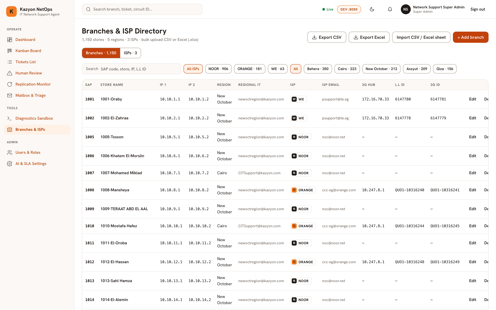
How It Works
Provides the master topology database (GET /api/v1/branches & /isps) that maps any store code to its governorate, circuit IDs, device IPs, and carrier support desk.
What It Can Do
- Fast Store Lookup: Searches across 1,150+ stores by code, name, governorate, or ISP carrier.
- Circuit & IP Inventory: Shows primary landline IDs, 4G backup numbers, and FortiGate/Cisco IPs.
- ISP Contact Cards: Lists escalation emails, account IDs, and SLA targets for WE, Orange, Vodafone, and Etisalat.
Users, Roles & RBAC Matrix
Operator account management and permission matrix across Admin, Dispatcher, and Viewer roles.
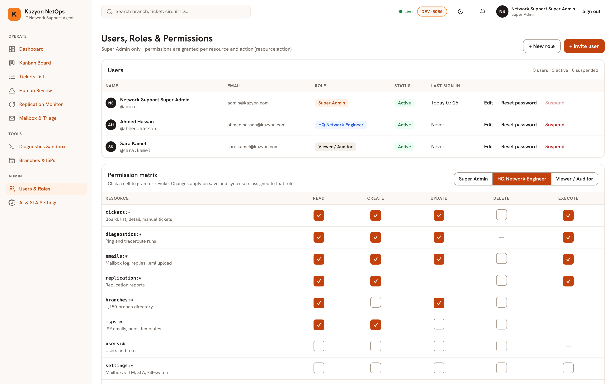
How It Works
Manages NOC accounts via /api/v1/auth/users and enforces 3 permission tiers across both FastAPI endpoints and React console actions.
What It Can Do
- Account Provisioning: Creates users, updates role assignments, resets passwords, and toggles active status.
- Clear Permission Matrix: Compares exact capabilities for
Admin,Dispatcher, andViewerroles.
AI, Mailbox & SLA Settings
Live configuration for AI confidence thresholds, Exchange polling, and SLA timers.
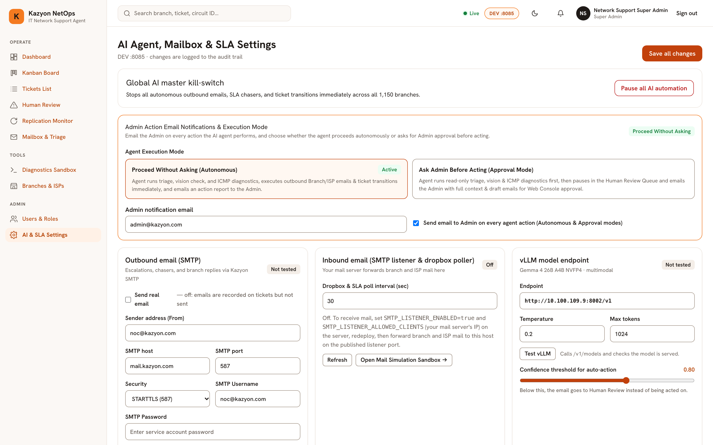
How It Works
Reads and saves runtime settings via GET / PUT /api/v1/settings so admins can tune AI autonomy, mail polling, and SLA rules without restarting the server.
What It Can Do
- AI Guardrail Tuning: Sets the LLM model, minimum confidence score for auto-dispatch, and recovery checks.
- Mailbox & Adapter Modes: Switches between Mock simulation and Live hardware/Exchange adapters.
- SLA & Retry Rules: Adjusts Critical (>24h) and High (3–24h) cutoffs, SLA hours, and max ISP follow-ups.